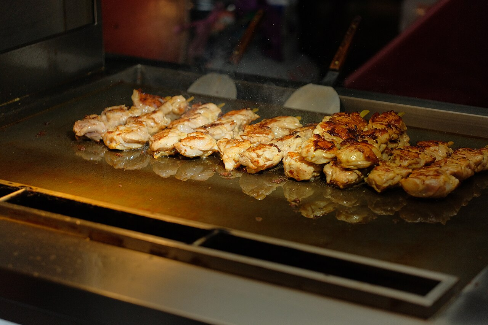
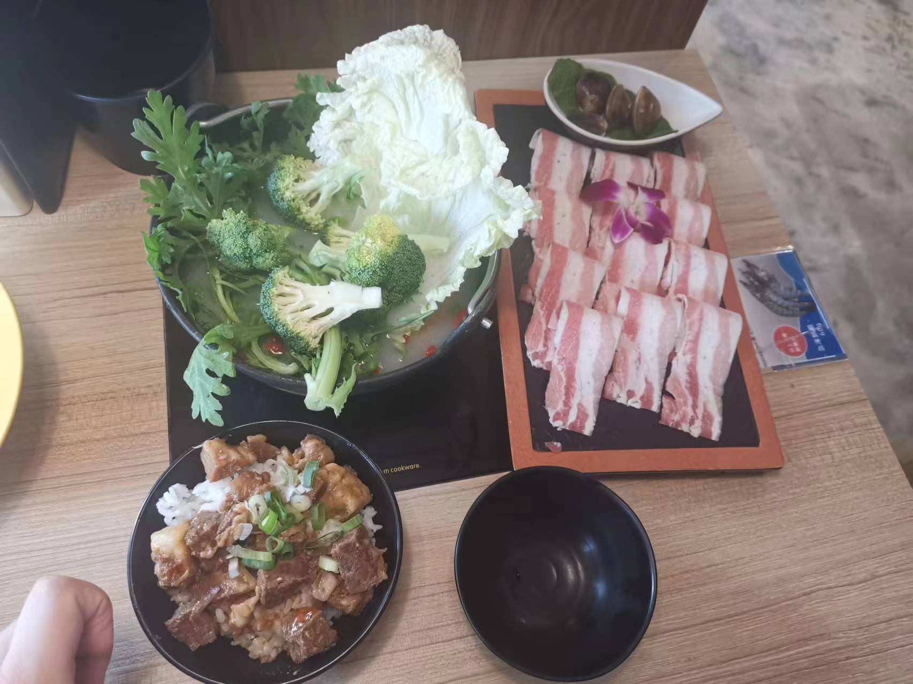
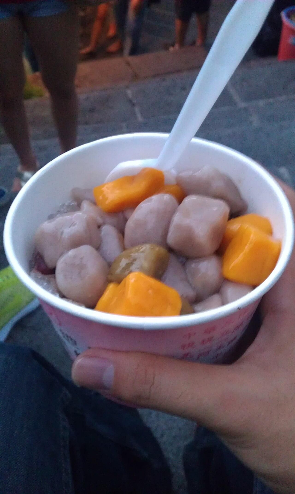
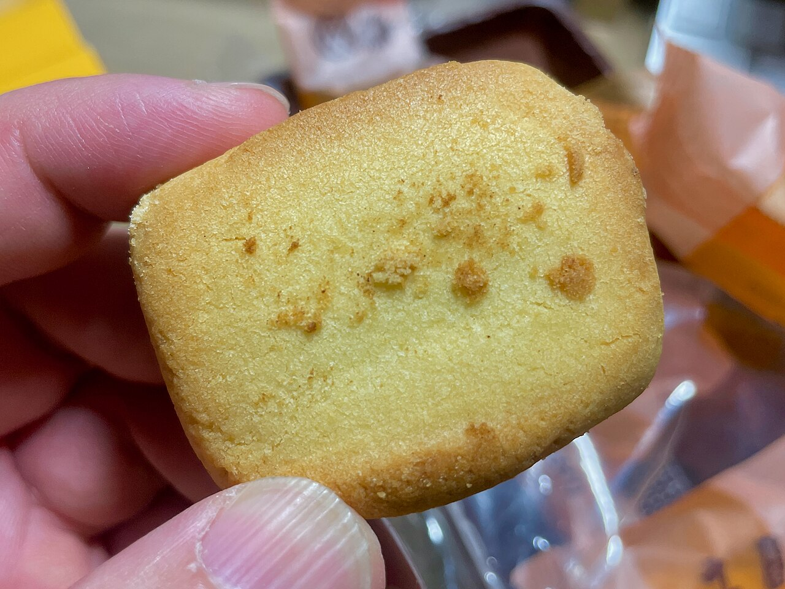
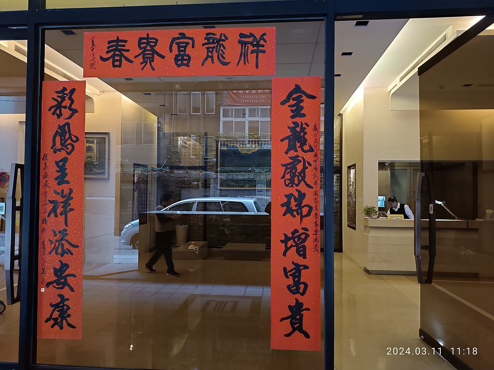

Taipei Taste Atlas · 2026
用味道
記住一座城市。
從清晨第一碗豆漿，到深夜最後一串鹽酥雞。我們走過台北 12 個街區， 把 24 種值得排隊的理由，收進這張地圖裡。

- 0種味覺分類
- 0家精選餐廳
- 0座經典夜市
- 0項必吃小吃
味覺分類
從一碗麵開始，
認識台北。
八種台北人習以為常的日常味道。點選任一分類，下方的精選餐廳會立刻為你篩選。
精選餐廳
在地人真的
會去的那種。
不是米其林指南的複製貼上，是巷口、市場二樓、與排了二十分鐘也甘願的那一攤。
這個分類還在採訪中，先看看別的？
夜市小吃
天黑之後，
城市才開始上菜。
鐵皮屋頂下的蒸氣、油鍋的聲音、老闆喊「內用還外帶」——台北的夜晚是用這些聲音調味的。





士林 · 基河路 19:40
互動地圖
點一下，
就知道該往哪走。
十個台北美食座標。點選地圖上的標記，或從右側清單挑一處，看看那裡該吃什麼、幾點去最剛好。
淡水信義線
板南線
松山新店線
文湖線

台北的味道，從來不在菜單上，
而在人與人之間。
— 寫給每一個願意為一餐排隊的人